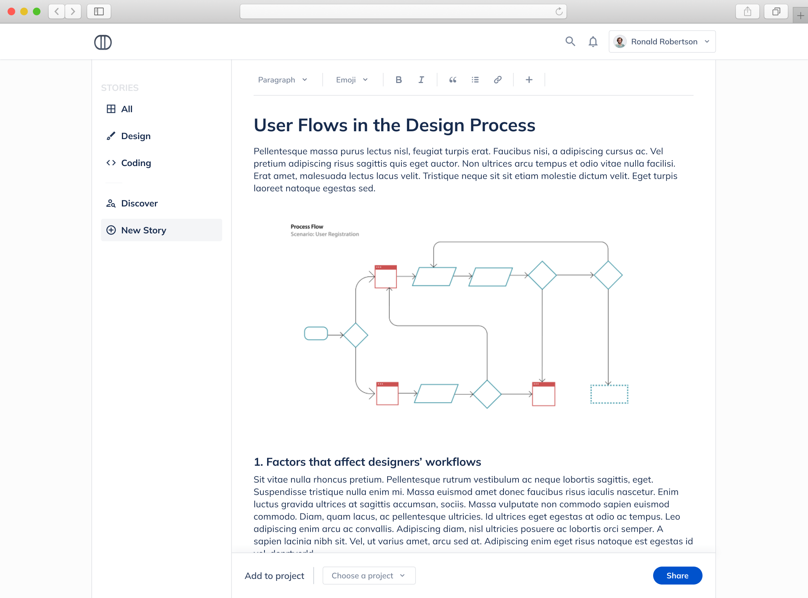

Diary for Projects
It's a diary for design and programming projects to share with people.
1.Problem
Nearly three or four years ago, I've created an Instagram account to get inspiration from people who have been learning to code and sharing their journey. Every day, they were writing what they're doing. It made me inspired to see them trying to learn something.
When I created an Instagram account, it wasn't easy to find people who share their design or programming journey. After lots of research, I got it, found people. But people weren't just sharing their journey. They were also posting some personal life stuff too. But I didn't care about their personal life. I was there because of their learning journey to be inspired. To be honest, those posts were just a distraction for me. Despite all of this, I was continuing to follow them. Because I needed that inspiration, motivation.
2.Solution
After years, I was sitting on the couch and looking at those Instagram accounts(I know, It's so cliche, but that's the truth). Suddenly, something happened. I don't know how or why but it happened. And the idea of this project came to my mind surprisingly. I thought, what if there was an online diary for people to just share their design and coding journey every day? Not the other stuff, just diary for design and coding.
3.Research
After the idea hit me, I tried to reach as many people as possible who have been sharing their journey. And I asked them one question:
- Why did you decide to share this learning process on social media?
Then I divided all the user answers into three groups in the fishbone diagram.
- User
- Software
- Other People

After, I translated user answers to user stories to understand their motivations and needs.
- I wanted to gain recognition from people so I could stay committed to the learning process every day.
- I wanted to follow other people so I could check my account for getting inspiration and learning new things, sources, etc.
- I wanted to share my process with others so I could find the motivation to go on.
And I specified features under two main titles.
Share the Process
- Different workspaces/projects
- Add new stories for every workspace/project
- Comment
Get Inspiration
- Explore and follow people
- Search
- Check stories
- Bookmark
4.Model
4.1.User Flow

4.2.Sketching initial ideas


4.3.Screens
I tried to design screens as simple as possible.
1)Home Page
I decided to show all users' posts on the home page. But, for instance, if they want to see only designers' posts then they can choose designers category. Users can bookmark a story. Also, they only search for people.

2)Explore Page
If users want to find new people to follow, the explore page is the right place.

3)Add Story Page
People must choose a project to add a story. If there is no project, they can create a new one. 
4)User's Profile Page
Users can see their projects, stories on their profile page. The following link on their profile page shows them how many users they follow. But any user can't see their followers.

5)Following Page
Users can see who they follow and unfollow accounts from that page if they don't want to follow them anymore.

6)Other Users' Profile Page
Users can see all the other users' workspaces and stories.

7)Project Page
Users can tell about the project. Also, this section can be used to see all the stories of the project.

8)Story Page
People can comment to explain their thoughts about the story on this page.

4.4.Interactions


5.Conclusion
This project has been a challenging and fun experience for me. I had a very short timeline, but I'm glad that I was able to become more comfortable with all the Ux process.